Engir Gölü
Doğal bir sit alanı olan Engir Gölü, barındırdığı canlı çeşitliliği ile Kayseri şehir merkezinin kalbinde canlı yaşamı için bir nefes noktası işlevi görüyor.
Göl ekosisteminde; turna balığı, kaplumbağa, onlarca tür kuş, yılan, tilki, domuz vb. canlılar yaşıyorlar.
Göl kenarında hayvan otlatan çoban, gölün 20-30 yıl öncesine kadar bugünkü yüzölçümünün iki katı kadar olduğunu anlattı.
Göle ulaşan su miktarı azalmış durumda, bilinçli bir koruma planı ile göl tekrar eski günlerine dönecektir.
Kayseri şehir merkezinde mini bir sultan sazlığı gezisi yapmak için bulunmaz bir fırsat sunuyor Engir gölü.
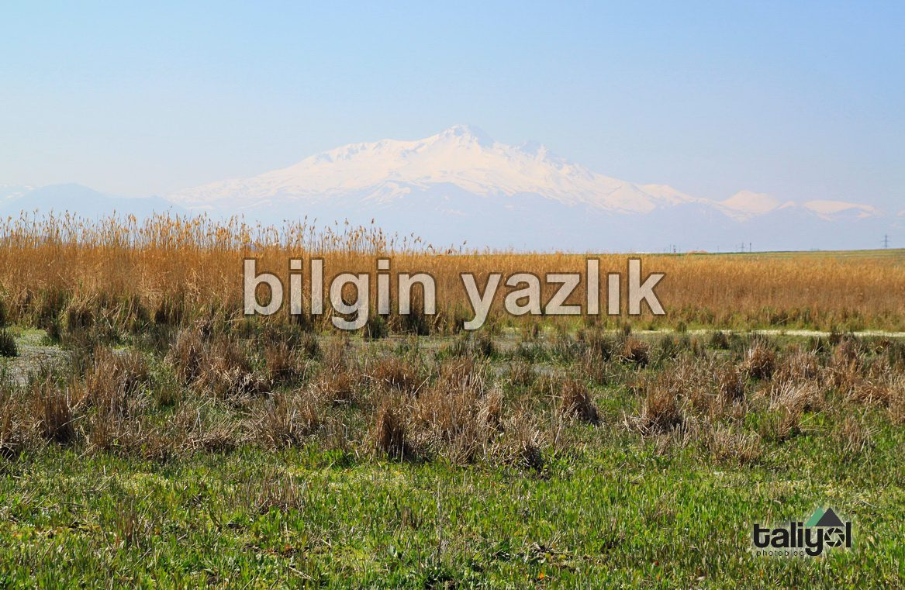
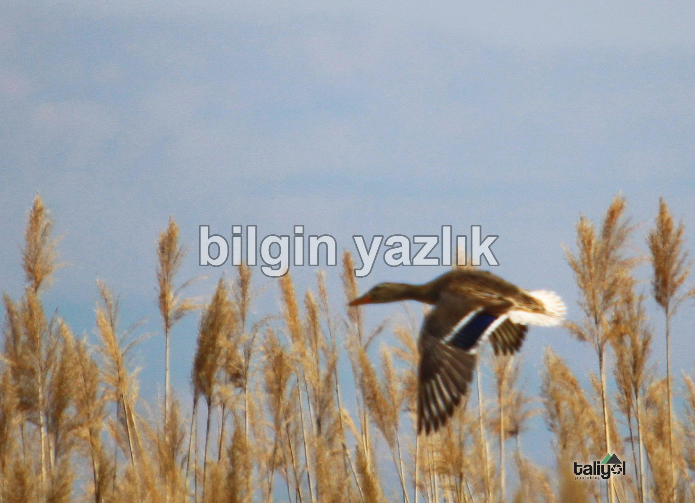
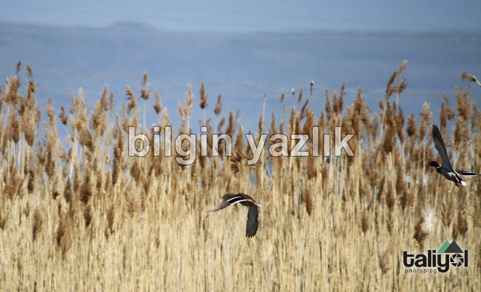
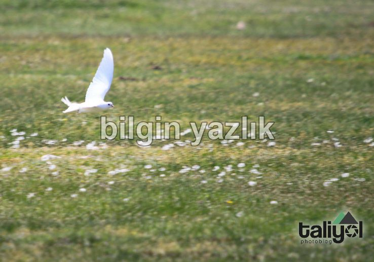
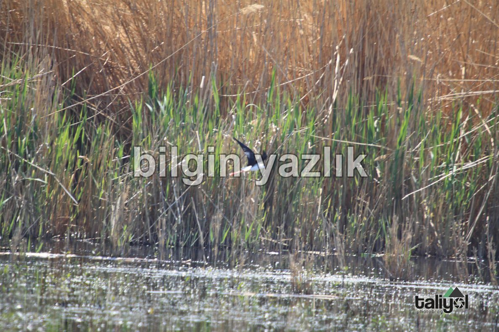
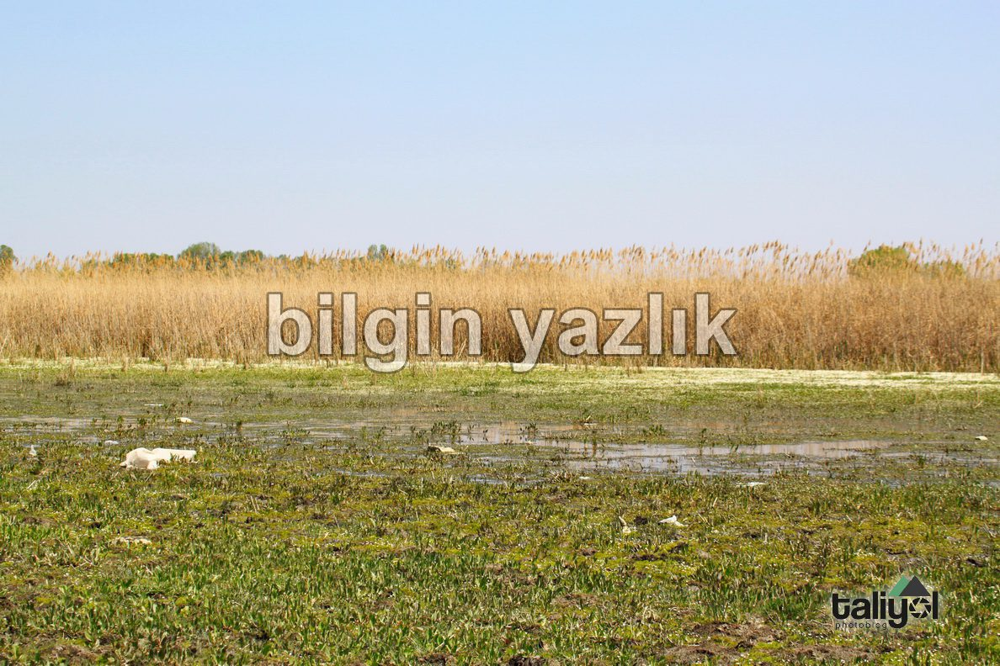
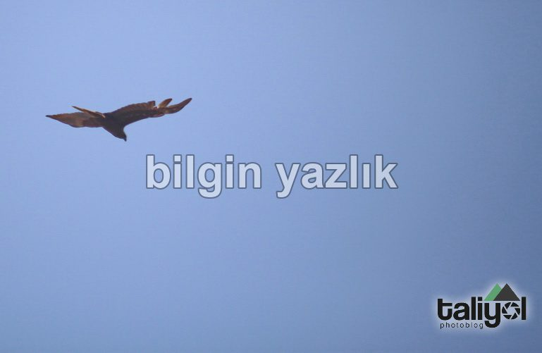
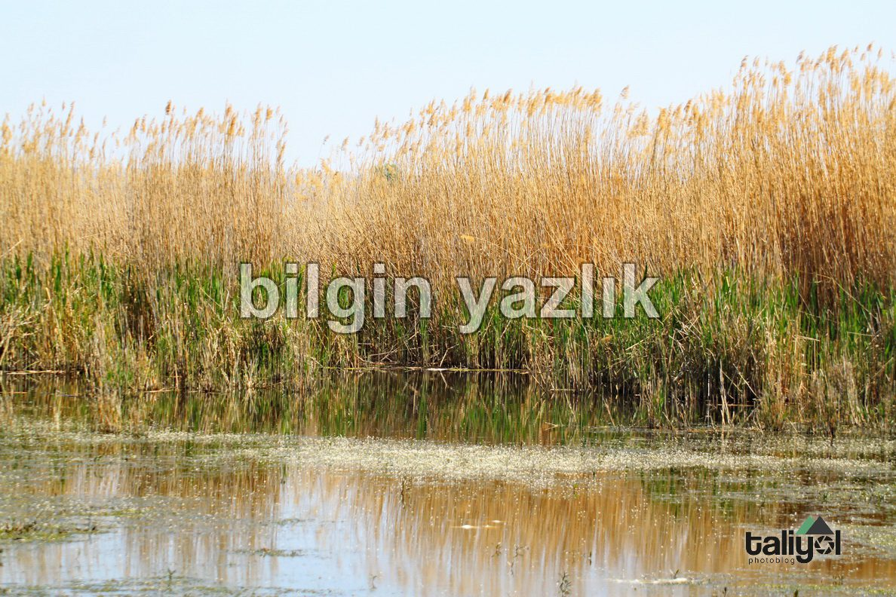
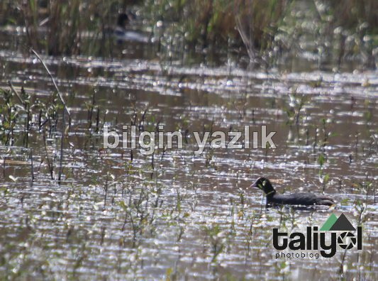
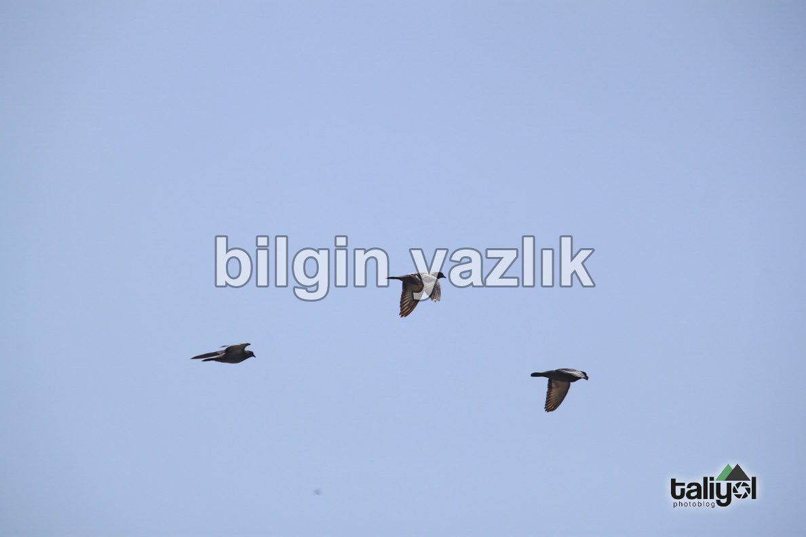
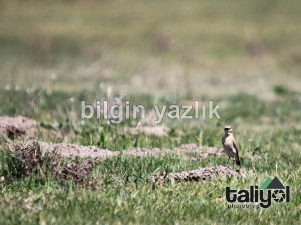
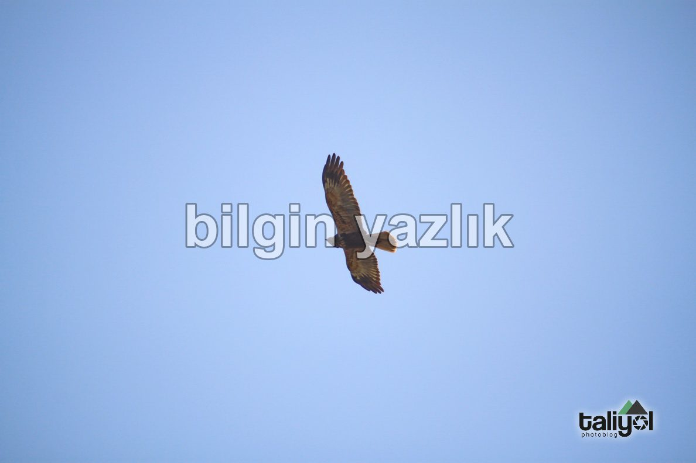
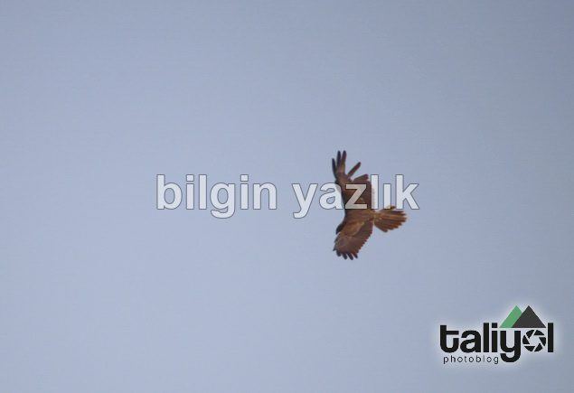
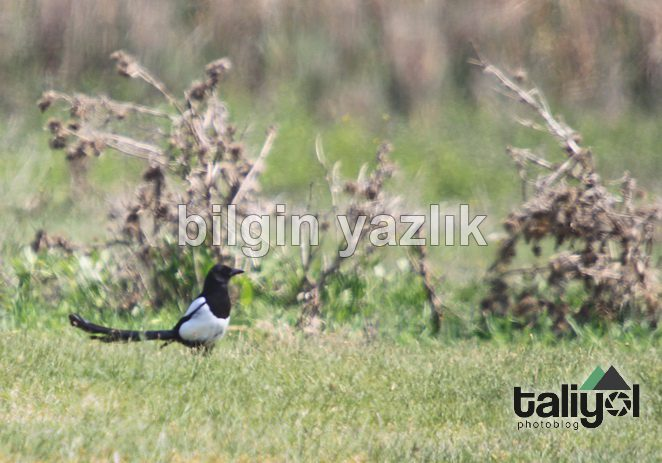
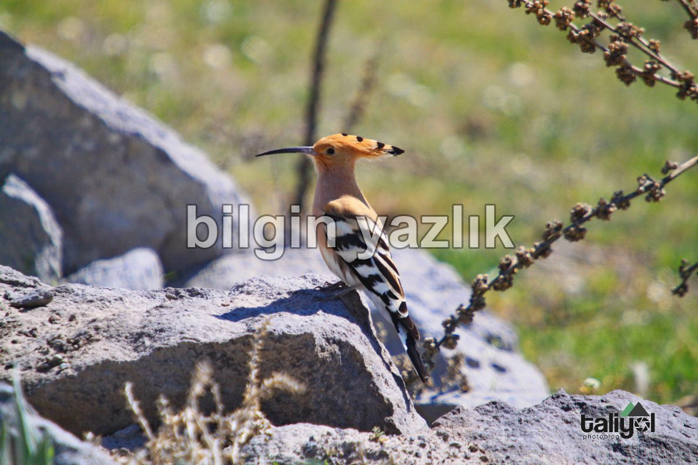
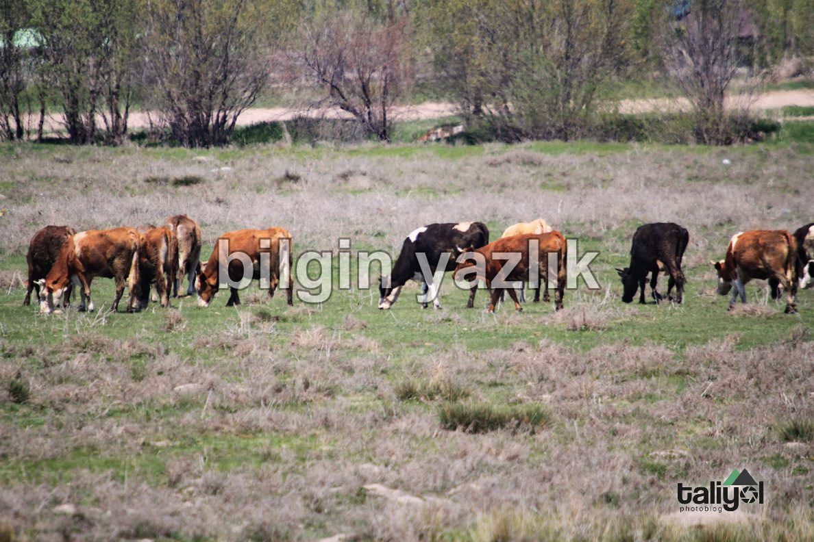
Bu yazı taliyol arşivinden taşınmıştır. · özgün kayıt